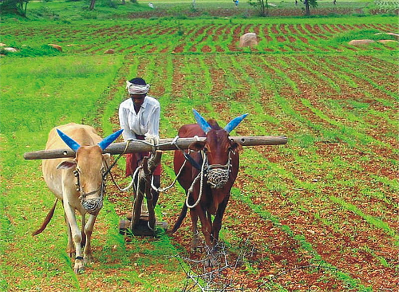
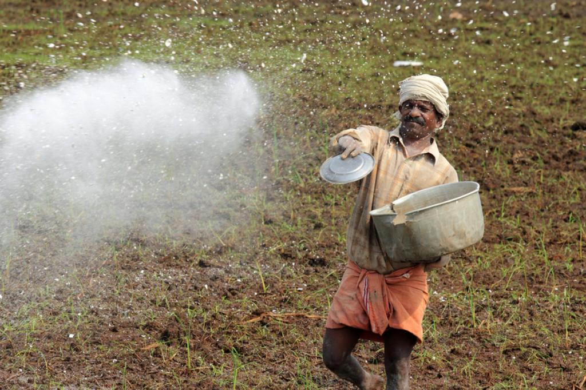
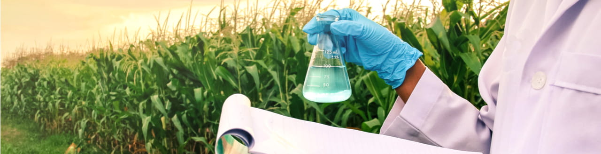
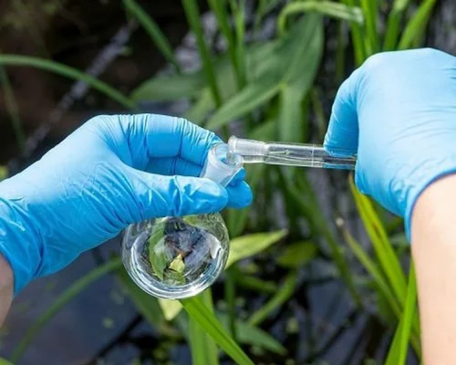

About Postik
Our Story
Postik was founded with a vision to revolutionize agriculture by providing farmers with the highest quality manure, fostering healthier soil, and promoting sustainable farming practices. We understand the critical role of nutrient-rich soil in achieving abundant crop yields, and we are dedicated to supporting farmers in their efforts to cultivate the land sustainably.
Our Mission
At Postik, our mission is clear: to support farmers by delivering nutrient-rich manure that enhances soil health and boosts crop productivity. We are committed to promoting sustainable farming practices that benefit both the environment and the agricultural community. By providing eco-friendly solutions, we aim to reduce the reliance on chemical fertilizers and promote a greener, more sustainable future for farming.

Our Team
The driving force behind Postik is a dedicated team of agricultural experts, environmentalists, and industry professionals who are passionate about sustainable farming. Our team brings together diverse expertise and a shared commitment to supporting farmers and protecting the environment.
